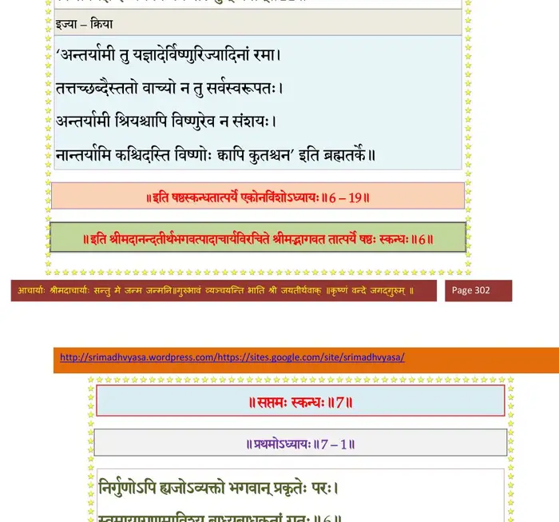

स्कन्ध 6 · अध्याय 19
श्लोक १
राजोवाच–
व्रतं पुंसवनं ब्रह्मन् भवता यदुदीरितम् ।
तस्य वेदितुमिच्छामो येन विष्णुः प्रसीदति।। १ ।।
व्रतं पुंसवनं ब्रह्मन् भवता यदुदीरितम् ।
तस्य वेदितुमिच्छामो येन विष्णुः प्रसीदति।। १ ।।
श्लोक २
श्रीशुक उवाच–
शुक्ले मार्गशिरे पक्षे योषिद् भर्तुरनुज्ञया ।
आरभेत व्रतमिदं सार्वकामिकमादितः।। २ ।।
शुक्ले मार्गशिरे पक्षे योषिद् भर्तुरनुज्ञया ।
आरभेत व्रतमिदं सार्वकामिकमादितः।। २ ।।
श्लोक ३
निशम्य मरुतां जन्म ब्राह्मणाननुमन्त्र्य च ।
स्नात्वा शुक्लदती शुक्ले वसीतालङ्कृताम्बरे।। ३ ।।
स्नात्वा शुक्लदती शुक्ले वसीतालङ्कृताम्बरे।। ३ ।।
श्लोक ४
पूजयेत् प्रातराशात् प्राक् भगवन्तं श्रिया सह ।
नमस्ते निरपेक्षाय पूर्णकाम नमोऽस्तु ते ।
महाविभूतिपतये नमः सकलसिद्धये।। ४ ।।
नमस्ते निरपेक्षाय पूर्णकाम नमोऽस्तु ते ।
महाविभूतिपतये नमः सकलसिद्धये।। ४ ।।
श्लोक ५
यतस्त्वं कृपया भूत्या तेजसा महतौजसा ।
तुष्ट ईश गुणैः सर्वैस्ततोऽसि भगवान् विभुः।। ५ ।।
तुष्ट ईश गुणैः सर्वैस्ततोऽसि भगवान् विभुः।। ५ ।।
श्लोक ६
विष्णुपत्नि महामाये महापुरुषलक्षणे ।
प्रीयेथा मे महाभागे लोकमातर्नमोऽस्तु ते।। ६ ।।
प्रीयेथा मे महाभागे लोकमातर्नमोऽस्तु ते।। ६ ।।
श्लोक ७
ओं नमो भगवते महापुरुषाय महानुभावाय महाविभूतिपतये सह महा-विभूतिभिः बलिमुपाहरामीति । अनेनाहरहर्मन्त्रेण विष्णोरासनार्ध्य-पाद्योपस्पर्शनस्नानवासउपवीतभूषणगन्धपुष्पधूपोपहाराद्युपचारांश्च समाहित उपाहरेत् ।। ७ ।।
श्लोक ८
हविश्शेषं तु जुहुयादनले द्वादशाहुतीः ।
ओं नमो भगवते महापुरुषाय महाविभूतिपतये स्वाहेति ।
श्रियं विष्णुं च वरदावाशिषां प्रभवावुभौ ।
भक्त्या सम्पूजयेन्नित्यं यदीच्छेत् सर्वसम्पदः।। ८ ।।
ओं नमो भगवते महापुरुषाय महाविभूतिपतये स्वाहेति ।
श्रियं विष्णुं च वरदावाशिषां प्रभवावुभौ ।
भक्त्या सम्पूजयेन्नित्यं यदीच्छेत् सर्वसम्पदः।। ८ ।।
श्लोक ९
प्रणमेद् दण्डवद् भूमौ भक्तिप्रह्वेण चेतसा ।
दशवारं जपेन्मन्त्रं ततः स्तोत्रमुदीरयेत्।। ९ ।।
दशवारं जपेन्मन्त्रं ततः स्तोत्रमुदीरयेत्।। ९ ।।
श्लोक १०
युवां तु विश्वस्य विभू जगतः कारणं परम् ।
इयं हि प्रकृतिः सूक्ष्मा मायाशक्तिर्दुरत्यया।। १० ।।
इयं हि प्रकृतिः सूक्ष्मा मायाशक्तिर्दुरत्यया।। १० ।।
श्लोक ११
तस्या अधीश्वरः साक्षात् त्वमेकः पुरुषः परः ।
त्वं सर्वयज्ञ इज्येयं क्रियेयं फलभुग् भवान्।। ११ ।।
त्वं सर्वयज्ञ इज्येयं क्रियेयं फलभुग् भवान्।। ११ ।।
भागवततात्पर्यनिर्णय

श्लोक १२
गुणव्यक्तिरियं देवी व्यञ्जको गुणभुग् भवान् ।
त्वं हि सर्वशरीरात्मा श्रीः शरीरेन्द्रियाशया।। १२ ।।
त्वं हि सर्वशरीरात्मा श्रीः शरीरेन्द्रियाशया।। १२ ।।
श्लोक १३
नामरूपे भगवती प्रत्ययस्त्वम(मु)पाश्रयः ।
यथा युवां त्रिलोकस्य वरदौ परमेष्ठिनौ ।
तथेमा उत्तमश्लोक सन्तु सत्या महाशिषः।। १३ ।।
यथा युवां त्रिलोकस्य वरदौ परमेष्ठिनौ ।
तथेमा उत्तमश्लोक सन्तु सत्या महाशिषः।। १३ ।।
श्लोक १४
इत्यभिष्टूय वरदं श्रीनिवासं श्रिया सह ।
तन्निस्सार्योपहरणं दत्वाऽऽचमनमर्चयेत्।। १४ ।।
तन्निस्सार्योपहरणं दत्वाऽऽचमनमर्चयेत्।। १४ ।।
श्लोक १५
ततः स्तुवाना स्तोत्रेण भक्तिप्रह्वेण चेतसा ।
यज्ञोच्छिष्टमवघ्राय पुनरभ्यर्चयेद्धरिम्।। १५ ।।
यज्ञोच्छिष्टमवघ्राय पुनरभ्यर्चयेद्धरिम्।। १५ ।।
श्लोक १६
पतिं च परया भक्त्या महापुरुषचेतसा ।
प्रियैस्तैस्तैरुपनमेत् प्रेमशीलः स्वयं पतिः।। १६ ।।
प्रियैस्तैस्तैरुपनमेत् प्रेमशीलः स्वयं पतिः।। १६ ।।
श्लोक १७
बिभृयात् सर्वकर्माणि पत्न्या उच्चावचानि च ।
कृतमेकतरेणापि दम्पत्योरुभयोरपि।। १७ ।।
कृतमेकतरेणापि दम्पत्योरुभयोरपि।। १७ ।।
श्लोक १८
पत्न्यां कुर्यादनर्हायां पतिरेव समाहितः ।
विष्णोर्व्रतमिदं बिभ्रन्न विहन्यात् कथञ्चन।। १८ ।।
विष्णोर्व्रतमिदं बिभ्रन्न विहन्यात् कथञ्चन।। १८ ।।
श्लोक १९
विप्रान् स्त्रियो वरवतीः स्रग्गन्धबलिमण्डनैः ।
अर्चेदहरहर्भक्त्या देवं नियममास्थिता।। १९ ।।
अर्चेदहरहर्भक्त्या देवं नियममास्थिता।। १९ ।।
श्लोक २०
उद्वास्य देवं स्वे धामि्न तन्निवेदितमग्रतः ।
अद्यादात्मविशुध्द्यर्थं सर्वकामाप्तये तथा।। २० ।।
अद्यादात्मविशुध्द्यर्थं सर्वकामाप्तये तथा।। २० ।।
श्लोक २१
एतेन पूजाविधिना मासान् द्वादश हायनम् ।
नीत्वा चोपरमेत् साध्वी कार्तिके चरमेऽहनि।। २१ ।।
नीत्वा चोपरमेत् साध्वी कार्तिके चरमेऽहनि।। २१ ।।
श्लोक २२
श्वो भूतेऽप उपस्पृश्य कृष्णमभ्यर्च्य पूर्ववत् ।
पयःशृतेन जुहुयाच्चरुणा सह सर्पिषा ।
पाकयज्ञविधानेन द्वादशैवाहुतीः पतिः।। २२ ।।
पयःशृतेन जुहुयाच्चरुणा सह सर्पिषा ।
पाकयज्ञविधानेन द्वादशैवाहुतीः पतिः।। २२ ।।
श्लोक २३
ब्राह्मणान् भोजयेद् भक्त्या त्वन्नाद्यैर्द्वादशात्मवित् ।
तेभ्यो दद्यात्तिलान् राजन् सोदपात्रान्गुडा(निला)न्वितान् ।। २३ ।।
तेभ्यो दद्यात्तिलान् राजन् सोदपात्रान्गुडा(निला)न्वितान् ।। २३ ।।
श्लोक २४
आशिषः शिरसाऽऽदाय द्विजैः प्रीतैः समीरिताः ।
प्रणम्य शिरसा भक्त्या भुञ्जीत तदनुज्ञया ।। २४ ।।
प्रणम्य शिरसा भक्त्या भुञ्जीत तदनुज्ञया ।। २४ ।।
श्लोक २५
आचार्यमग्रतः कृत्वा वाग्यतः सुसमाहितः ।
दद्यात् पत्न्यै चरोः शेषं सुप्रजास्त्वं सुसौभगम्।। २५ ।।
दद्यात् पत्न्यै चरोः शेषं सुप्रजास्त्वं सुसौभगम्।। २५ ।।
श्लोक २७
एतच्चरित्वा विधिवद् व्रतं विभोरभीप्सितार्थं लभते पुमानिह ।
स्त्रीर्वा तदास्थाय लभेत सौभगं श्रियं प्रजां जीवपतिं यशो गृहम्।।
कन्याऽपि विन्देत समग्रलक्षणं पतिं त्ववीरा हतकिल्बिषा गतिम् ।
मृतप्रजा जीवसुतान् धनेश्वरी सुदुर्भगा सुभगा रूपमग्रयम्।। २७ ।।
स्त्रीर्वा तदास्थाय लभेत सौभगं श्रियं प्रजां जीवपतिं यशो गृहम्।।
कन्याऽपि विन्देत समग्रलक्षणं पतिं त्ववीरा हतकिल्बिषा गतिम् ।
मृतप्रजा जीवसुतान् धनेश्वरी सुदुर्भगा सुभगा रूपमग्रयम्।। २७ ।।
श्लोक २८
विन्देद् विरूपा विरुजो विमुच्यते य आमयावीन्द्रियदेहकल्पः ।
एतत् पठन्नभ्युदये च कर्मण्यनन्ततृप्तिं पितृदेवतानाम्।। २८ ।।
एतत् पठन्नभ्युदये च कर्मण्यनन्ततृप्तिं पितृदेवतानाम्।। २८ ।।
।। इति श्रीमद्भागवते षष्ठस्कन्धे एकोनविंशोऽध्यायः ।।